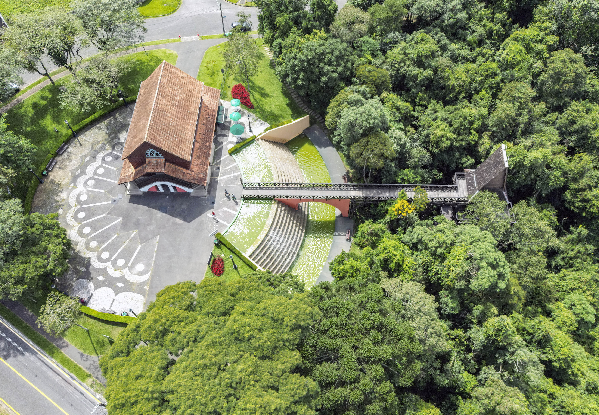
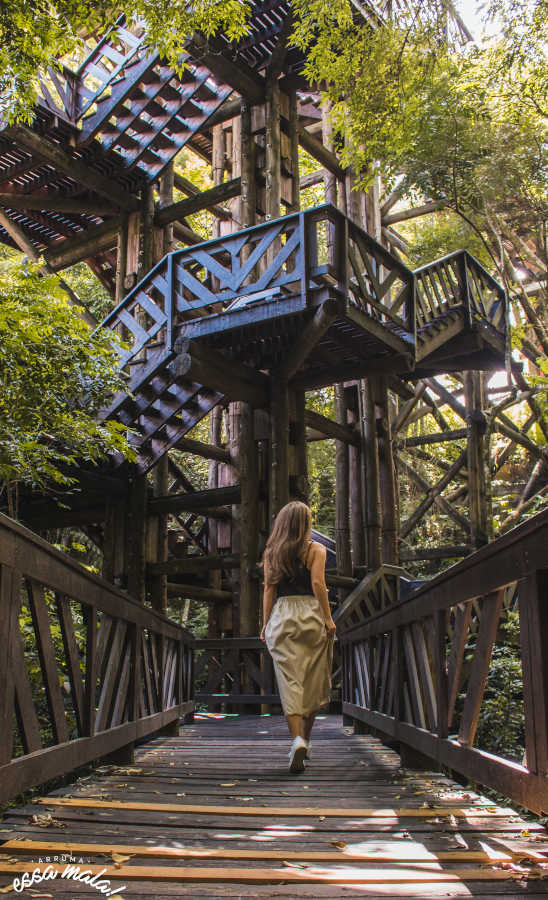
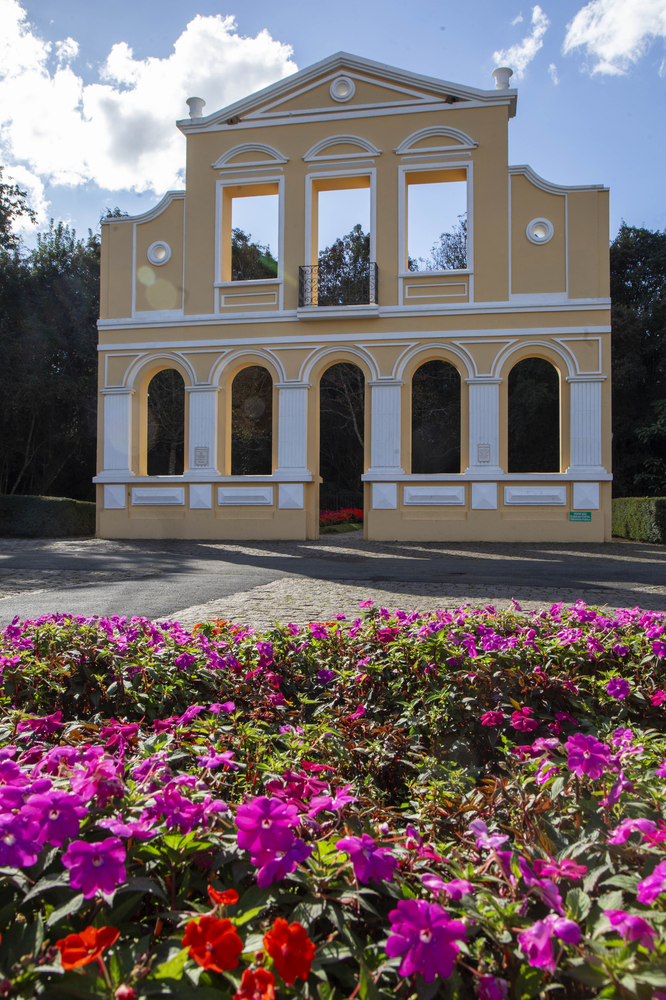

Sejam bem vindos ao meu site
O bosque do alemão é um parque muito antigo e incrivel


O bosque do alemão é um dos pontos turisticos mais famoso de curitiba
Foi inaugurado em 13 de abril de 1996, na cidade de Curitiba, capital do Paraná, no bairro Vista Alegre. Antiga chácara e leiteria da família Schaffer, de origem germânica
Ele se destaca por locais como o Oratório de Bach, a Trilha de João e Maria e a Torre dos Filósofos, algumas representando antigas construções do lugar.
O parque é um símbolo essencial da identidade cultural de Curitiba porque homenageia a imigração germânica iniciada em 1833, preserva a memória arquitetônica e literária, e integra a tradição europeia à natureza local
